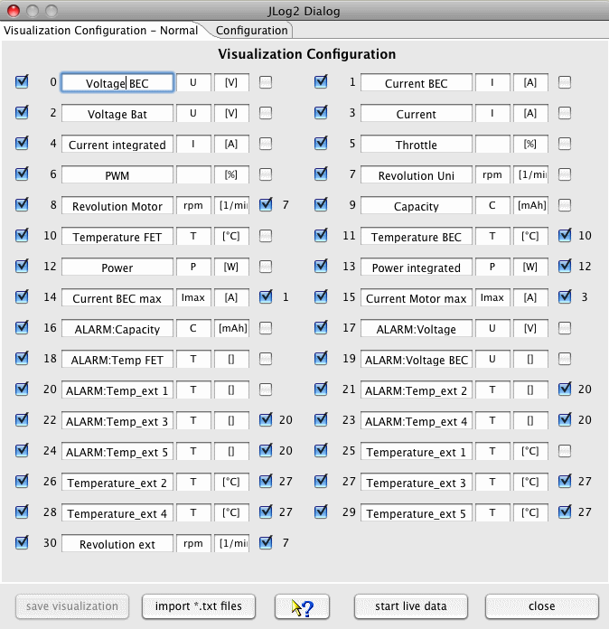
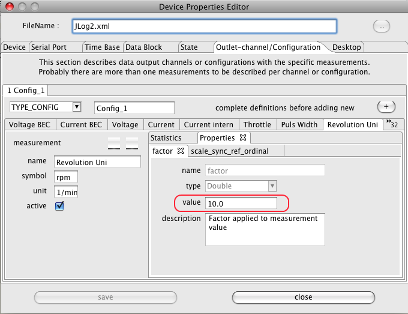
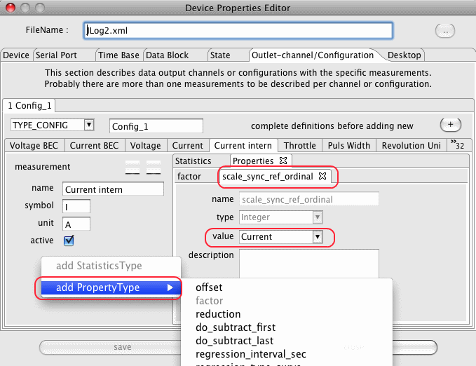
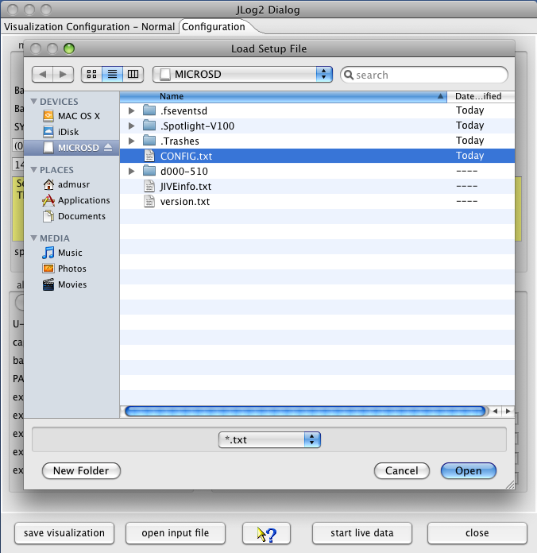
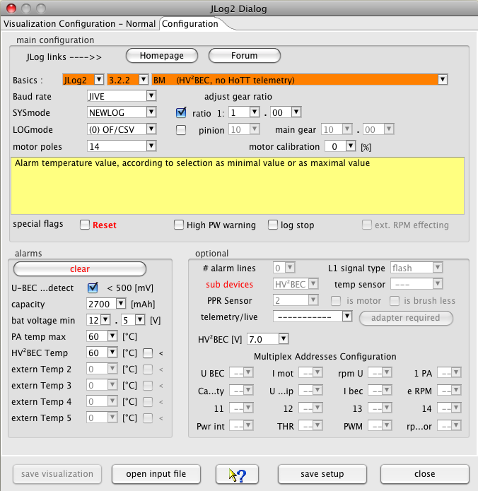

The device dialog should be used to configure the visualization of measurements by selection. Names can be changed as well as symbols and if necessary the unit. Unchecked measurement will not be displayed. Curves without reasonable data doesn't get displayed as well. This will lead to a more clear representation, curves which are hard to be interpreted in two dimensional way, may be blanked out. It is possible to import data files using the 'import *.txt files' button as well.

Hint: The visualization configuration will be applied as well as it is closed in cases where the tool bar button is used to import the data.
At the right hand side of the configuration panel are check boxes which enable a semi automatic scale synchronization. While checking measurement name will be compared to previous once and the fitting measurement ordinal will be added to the measurement configuration entry. Using scale synchronization will reduce the required space for scales and spend more for the graphics. Anyhow, keep in mind that this has influence to the curve a scale visualization and may corrupt this as well. Overlaying curves in this matter will allow direct comparison without using the curve compare window. The visualization is prepared to minimize required changes. Please choose the curve names, in case of scale synchronization, in a way that the names starts with the same word, sample Current synchronized to Current Motor, Current Rx, Current Motor2. This is the algorithm the semi-automatic synchronization is working. Using the DevicePropertiesEditor it is possible to synchronize almost every curve to another by configuration. Sure, this makes only sense for curves where use somehow matching range of values.
 
In cases where other sensors get connected it might be required to adapt a measurement factor or add an offset to adapt sensor capabilities to reality. All this can be done by using the DevicePropertiesEditor.
Hint: While changing curve names, symbols units or synchronization entries the device configuration file gets changed. With a later version of DataExplorer the device properties schema might change (DeviceProperties_Vxy.xsd), in this case a backup copy of the complete device configurations will be created (Devices_Vxy-1) and your change will remain there. The out dated device configuration file can be used as template to update the new version. If a device configuration file seams to be damaged, just delete it from Devices directory. It will be recreated next time DataExplorer gets started.
While the data gets created it is possible to gather them. As prerequisite a serial port must be configured for the JLog in this application. Is this done and the USB FTDI interface for serial communication is connected to the system and with JLog2 the live data gathering can be started immediately by push the start live data button. The application waits until data can be received and display it as possible. Important is to have the JLog2 and the connected Jive motor driver connected with a battery to enable motor activation. Otherwise JLog2 will not start its own logging. Writing log data to the SD card can not be suppressed.
While selecting the configuration tabulator of this dialog a file open dialog gets opened to select a CONFIG.txt file. This file is located in the root directory of the SD card. This file will be red and the contained configuration displayed in the dialog.
 
After changing some configuration values saving changes will be enabled. The CONFIG.txt file should be written to identical location as red before. Afterward the SD card can be removed from the system and inserted into the slot of the JLog2. While using sub devices which provides data integrated into the JLog2 data log this sub devices needs to be connected properly and configured as required. As example the GPS-Logger or a battery BID chip should be named.
It is required to configure the telemetry configurations fitting to the connected sub device. According to the description telemetry data get requested by the receiver and transmitted to the radio controller.
The receiver and JLog2 has to be connected as shown to enable HiTec telemetry. Keep in mind to have pull-up resistors, otherwise the receiver do not accept data as telemetry data bus.

Hint: It is not possible to connect additional analog sensors, only the COM connector enables connection of digital temperature sensors!


Hint: If a HV2BEC is configured and connected the external temperature changes to HV2BEC temperature, external temperature 2 to external temperature 1 .... external temperature 5 to external temperature 4!
Using the GPS-Logger as sub device it is required to configure Multplex addresses to enable the communication of JLog2 and GPS-Logger.

To connect a battery BID Chip as sub device take care for correct connection.


For additional hints refer to JLog Connections